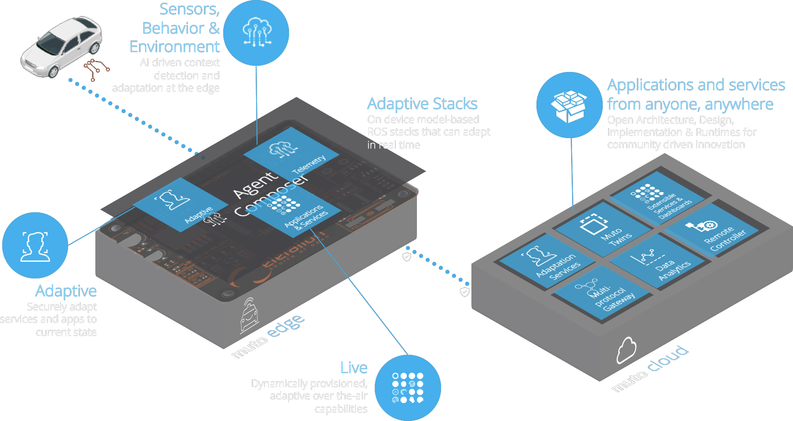
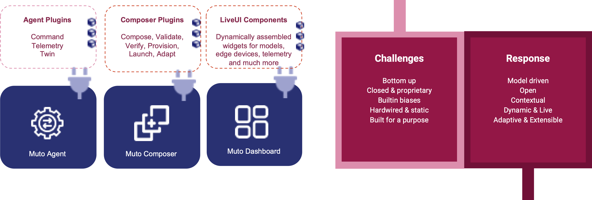
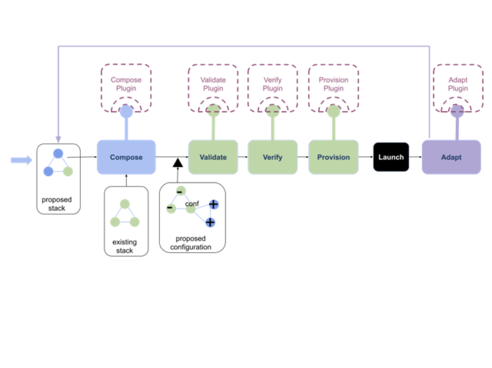
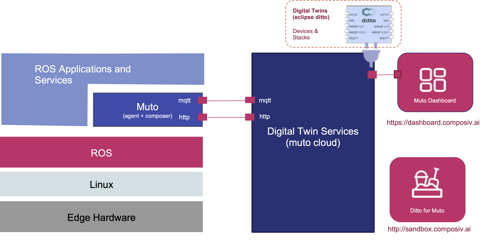
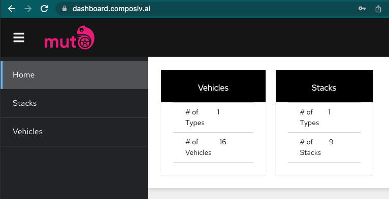

Muto
Background:
Autonomous driving and connectivity are cornerstones of the next generation of mobility. Users expect mobility experience to be personal, seamlessly integrated, connected and with demand services that can adapt to their immediate needs. These systems demand immense computing power in order to mimic the adaptivity and the awareness of a human driver under different driving circumstances and context variations. Contextual adaptivity requires a system to make sense of large volumes of rich & continuous data coming from the devices, the user behavior and the environment.

Many solutions use hardwired, closed & proprietary software with often unexplainable built-in biases. Robot Operating System (ROS) allows a modular system to be designed as a fully distributed computation, so different functional modules (i.e. sensing, perception, decision, planning, actuation, etc) can act together as a single autonomous vehicle.A challenge with a typical ROS based hardwired solution is that the components (nodes, a network of interconnected computational and executable units) constituting the system are deployed into an environment to fulfill a certain concern with a specific mission plan, and they are not typically designed or implemented to react and to adapt changing requirements in the environment. A major difficulty that prevails for any adaptive system is being able to update the system without compromising its mission, plan, safety and security while it is active because the damages could be substantial.
Scope
Eclipse Muto provides an adaptive framework and a runtime platform for dynamically composable model-driven ROS software stacks on autonomous vehicles and robots in general.
Eclipse Muto introduces the concept of a lightweight model for ROS software stacks, which in its simplest form is a model for the system of connected ROS nodes and the context for which it is applicable. The Muto Agent and Muto Composer are ROS based runtimes designed to run on edge devices (i.e. AVs). Muto Dashboard is an extensible Web/Mobile application for centralized management of edge devices and Muto stacks deployed on these devices. Muto Composer runtime can introspect and change (i.e launch, stop, restart, configure, etc.) the network of distributed components running on a device using the Muto Stack definitions. Muto Agent allow remote management and monitoring of the devices and stacks and uses eclipse IoT technology such as Eclipse Ditto to define a digital twin for each device providing synchronous and asynchronous APIs and use the digital twin API to manage Muto stacks and ROS behavior.
The adaptive behavior is introduced by an extensible model where the context detection, stack rewriting, validation, constraint satisfaction, safety and security concerns can be offloaded to other modules (i.e proprietary systems). An example of such a module would be a remote control system where human operators determine the next configuration. A different implementation might use machine learning and scene detection to switch and transition to different stacks that are suitable to the current context.
Runtime
Eclipse Muto provides an adaptive framework and a runtime for dynamically composable model-driven ROS software stacks. Eclipse Muto can be used to introspect, monitor and manipulate the actively running ROS graph (the network of ROS nodes). The muto runtime has two components that run on edge devices, the Agent and the Composer.

The Agent is basically a ROS node that acts as gateway between the cloud (Muto Twin) and the edge device. The composer is a high performance and lightweight Composer engine which can handle complex transfomations of software and lifecycle on the device. These components are build with extensibility in mind. All Agent and Composer capabilities are provided by muto plugins. Infact, muto comes with example plugins that you can use to customize it for your own functionality. There are two types of plugins:
Command PluginsThese are plugins for theAgent. They are calledCommand Pluginsbecause they are used to add behavior to theAgentand can be invoked by a client using the mqtt protocol, and get the command response will be returned using a target topic (more on this later)Composer PluginsandFlowsThese are plugins for theComposer. TheComposerbehavior is driven by aFlow, which is a lightweight orchestration definition. Each step in a flow desciption invokes aComposer Plugin.
Muto devices are managed by their digital twin. Muto uses Eclipse Ditto to build digital twins
of devices connected to the cloud. We also provide a sandbox and an example dashboard that is connected to the sandbox to demonstrate Muto's capabilities.

Agent
Agent is a runtime ROS component (Node) acting as a transceiver between the edge device and the twin server (Eclipse Ditto). Agent acts as a gateway between the device and remote management capabilities with support for asynchronous communication capabilities via MQTT. It acts as a communication bridge between edge devices and their respective virtual twins. The main aspects of data transported by Agent are as follows:
Device Telemetry
Agent is capable of publishing data streams up to the Twin Server, such as data that streams in ROS topics. Stream of data mapped from edge device to virtual one, could represent instant telemetry information and/or any other device specific details. This kind of data is useful for monitoring devices and algorithmic parameters with adjustable-frequency updates. Data such as odometry, speed, localization, goal or any other drive and device related can be broadcasted via declarative models. This kind of fast paced, high frequency data moving up to digital twins is also read by Muto Dashboard to provide a graphical interface and an adequate representation of aforementioned data.
Command Relay
Agent relays commands from the twin server to Composer running on the edge device. This type of information may be related to the lifecycle of ROS nodes that constitute the software stack actively running on the edge device as well as the lifecycle actions (start, stop, update etc) that may trigger the composer to respond.
Composer
Composer is a runtime ROS component (Node) that is responsible for the life cycle of a stack; Composer uses various ROS packages and APIs to launch ROS Nodes defined by the software stacks. It can be thought of as a smart launch manager. Composer uses the stack information model and computes the delta between the current and the desired state of the ROS graph and manages the lifecycle of ROS nodes accordingly.
Dashboard
A simple extensible Web/Mobile application for centralized management of edge devices and software stacks. It provides a plugable micro front end architecture for extensibility and an exemplary view for managing edge devices and composable ROS stacks on these devices. It supports and uses Eclipse Ditto device twins technology (and therefore protocols such as MQTT and REST/HTTP) for managing ROS based devices. It is designed to be modular at architectural level to make it easy to extend for a multitude of ROS applications.

The dashboard provides the following functionalities:- Vehicles : A graphical visualization of the ROS computational network that represents the actively running ROS nodes of the current state. It displays the node-to-node and node-to-topic affiliations with introspection information ( name, subscriber, publisher etc.)
- Stacks: An interface to list the stack models that describe the components of a software stack that complies with the information model stored in the twin server.
- Remote Control Actions: An interface to manage (start,stop, update) the lifecycle of the software stack on the edge device.
- ROS Controls: Dashboard provides a graphical UI for some of the common ROS cli commands.
LiveUI
Micro frontends is an architectural style where independently deliverable frontend applications are composed into a greater whole. Muto LiveUI has been developed for building any such extensible Web or Mobile apps, such as the Muto Dashboard.
LiveUI opts for run-time integration via JavaScript that is tightly integrated with popular Javascript frameworks such as React.js, Vue.js and integrates well with packaging and development tools such as npm, Webpack and Metro bundler. There is a cost to using distributed, micro service based architecture; there are more pieces, more repositories, more tools, more build/deploy pipelines, more servers, more domains, etc. We created LiveUI to help us manage some of these issues and improve the developers' experience using micro frontends. Live UI can be fully configurable to be integrated into many different devops processes and pipelines allowing many different custom project and repository layouts, test and quality tools. Development tooling and debugging experience is seamless with or without the inclusion of the container (parent) frontend.
Where to start?
You can jump to the quick start section to get started with LiveUI. If you want to see some examples, check our samples repository.